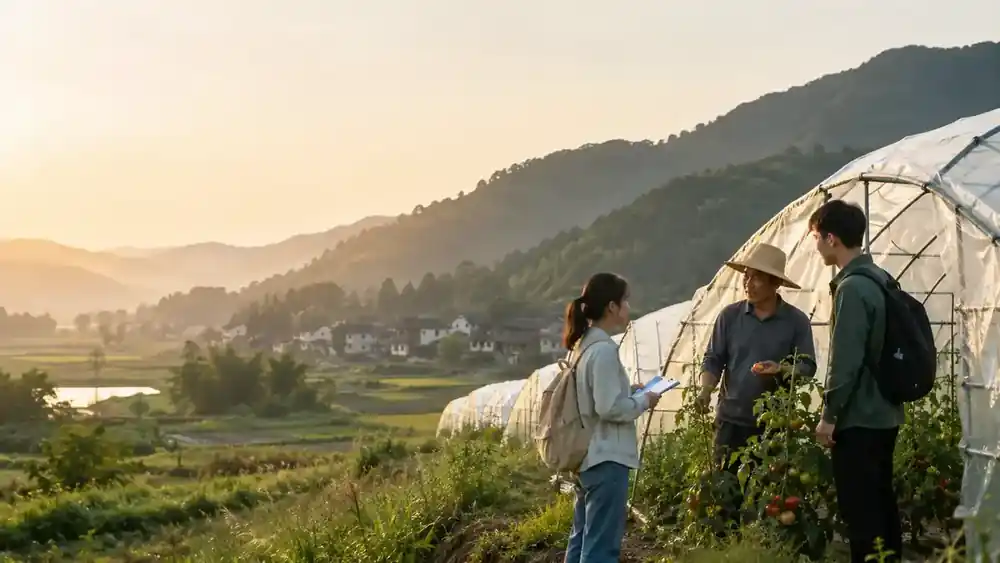
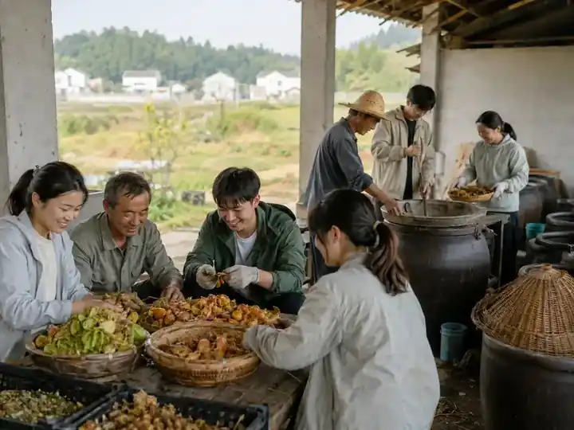
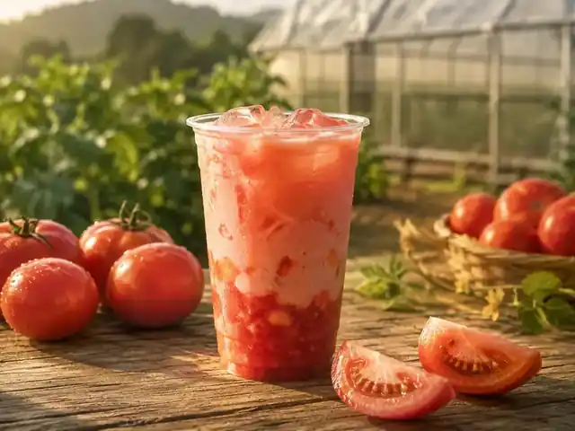
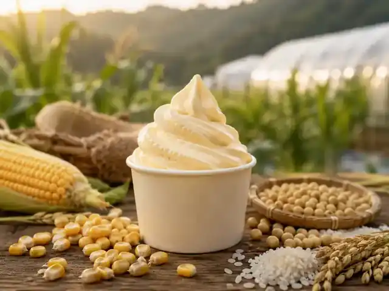
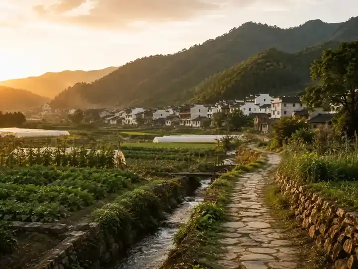

先解决农废
让残次果、果皮和秸秆重新进入农业生产。
以农用酵素为技术底座，把残次果、果蔬秸秆等农业副产物转化为生态种植投入品，再以番茄、玉米、大米等本地农产延伸年轻化产品与研学体验。

项目缘起
瑞溪村拥有数十年的大棚番茄种植基础。项目把农业副产物处理、农用酵素发酵、生态种植、农产品设计与青年实践放进同一套协作机制中。
产品不是主线的替代，而是把生态种植价值带到消费端的一种表达：一杯番茄鲜饮、一份谷物大豆冰淇淋，都从土地和村庄故事出发。
让残次果、果皮和秸秆重新进入农业生产。
用标准化发酵体系服务土壤养护与田间管理。
把优质农产转化为产品、研学与村庄品牌。
循环方案
以村级酵素工坊为枢纽，把原料、技术、种植、产品和共创串成一条清晰的价值链。
残次果、果皮、秸秆分类归集。
在村级工坊完成配比与过程管理。
服务土壤养护与作物生长管理。
培育番茄、玉米、大米等本地原料。
连接饮品、甜品、伴手礼与研学。
支持农户、工坊、生态与青年实践。

技术底座
农用酵素以废弃瓜果蔬菜等为发酵底物，在厌氧条件下形成由有益微生物、有机酸与矿质养分共同构成的微生物生态系统。
大分子有机物逐步分解，为后续发酵释放可利用底物。
有机酸积累，发酵环境逐渐稳定，有益微生物形成优势。
体系继续稳定，形成可服务田间管理的代谢产物组合。
产品原型
以生态种植原料为核心，把本地风味、现场体验与村庄故事放进更年轻的消费场景。

以生态种植番茄鲜汁连接新式饮品场景，突出本地原料、现制体验和田园识别度。

以大豆为植物基底，融入玉米与大米的谷物风味，形成具有地域记忆点的乡村甜品。
瑞溪故事
原底三甲村于 2019 年与河溪村合并为瑞溪村。这里既有数十年的大棚番茄种植传统，也保留着约 1.5 公里、4000 多级石阶的宋窑古道。

参与共创
围绕生态种植、田间记录和农户培训开展长期协作。
把原料处理、酵素发酵与公众体验组织成可参观流程。
让学生从一筐农废出发，完成一次完整的乡村循环任务。
用产品、影像和数字内容讲清楚土地、农户与村庄的故事。